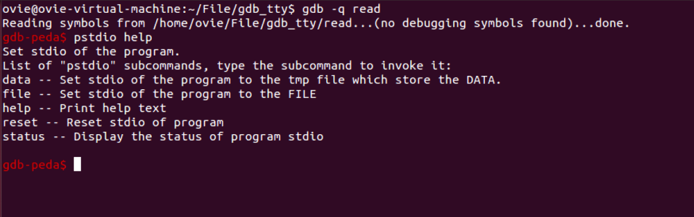
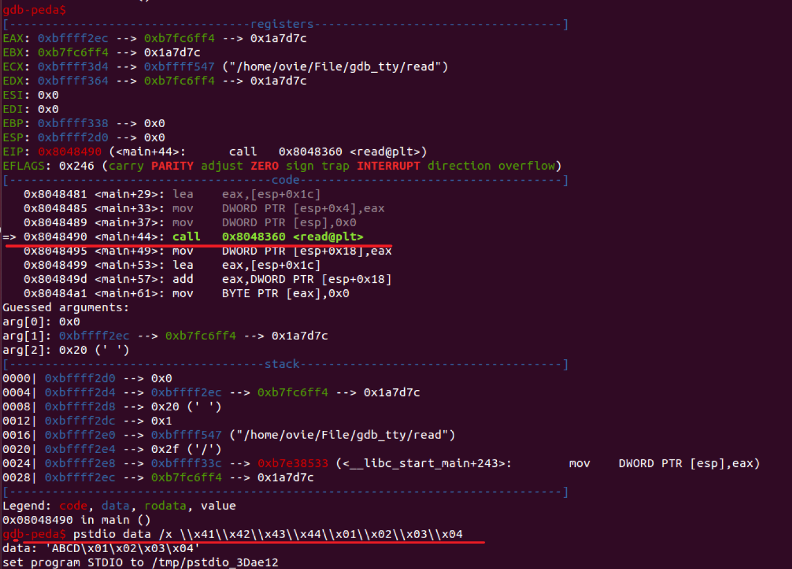
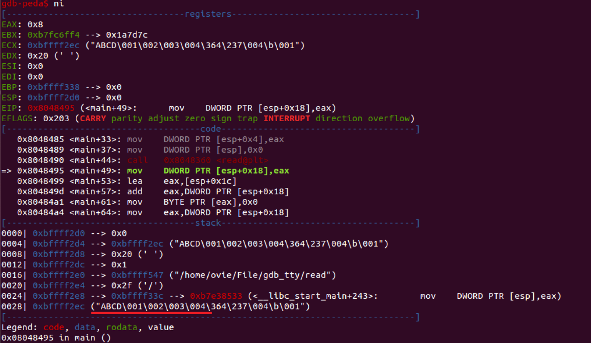
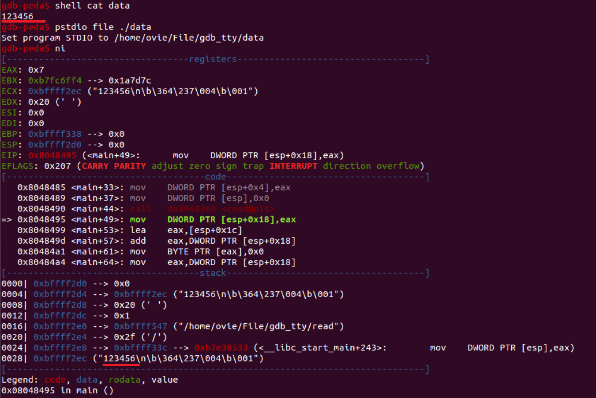
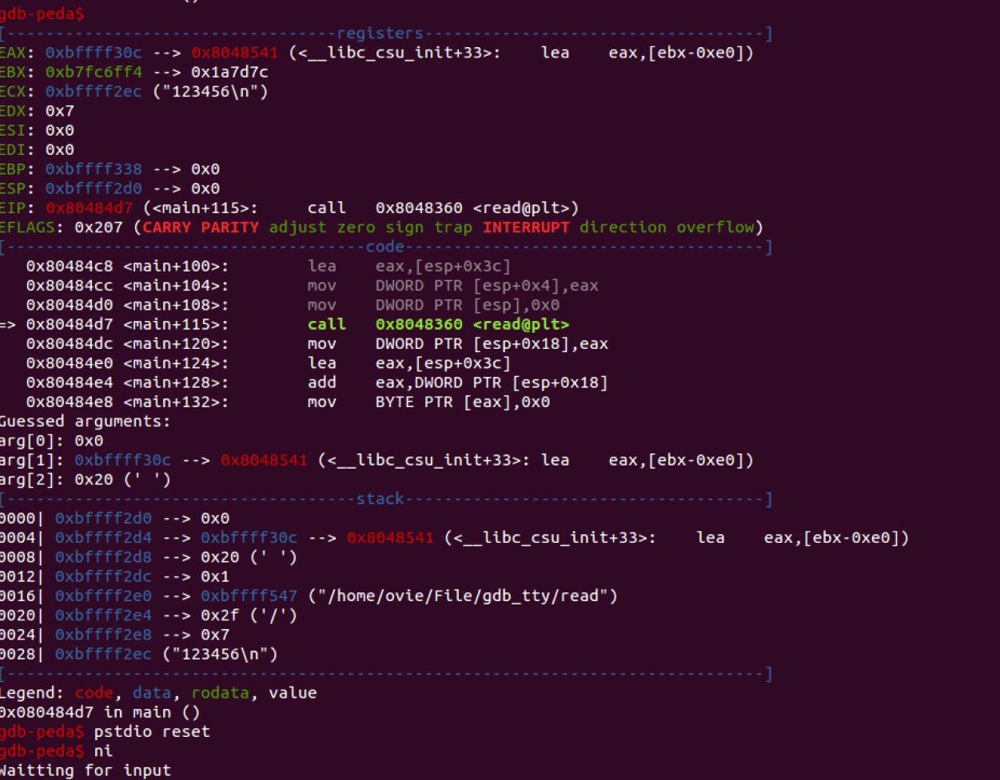

想有没有一种方式能一边使用GDB调试程序，一边在需要的时候通过标准输入传递构造好的恶意数据（通常含有各种特殊字符，如\x01\x02\x03等），这样可以实时知道恶意数据输入后，程序的状态、执行过程。而不是执行exp，把程序弄崩溃，利用core file还原崩溃现场。
想了好几种方式，最后是利用GDB的call命令来调用函数修改被调试程序的标准输入，这样程序可以从我们指定的文件里读取特殊字符。
写了个GDB Python插件，代码在：https://github.com/Ovi3/pstdio
使用例子
编译测试用的程序。read.c：
1 |
|
编译：gcc -o read read.c
安装pstdio：
1 | git clone https://github.com/Ovi3/pstdio.git ~/pstdio |
开始调试gdb -q read。
先看下帮助文档：pstdio help

调试执行到call <read@plt>之前，执行（有两个反斜杆）
1 | pstdio data /x \\x41\\x42\\x43\\x44\\x01\\x02\\x03\\x04 |
接着执行ni单步执行call <read@plt>后，数据就会被写入。


或者在/path/to/data文件里存数据，接着执行pstdio file /path/to/data，再单步到call <read@plt>，文件里的数据就会被写入。

程序在重新运行后，或者在执行pstdio reset后，程序的标准输入就会恢复，也就是数据从屏幕上输入。
